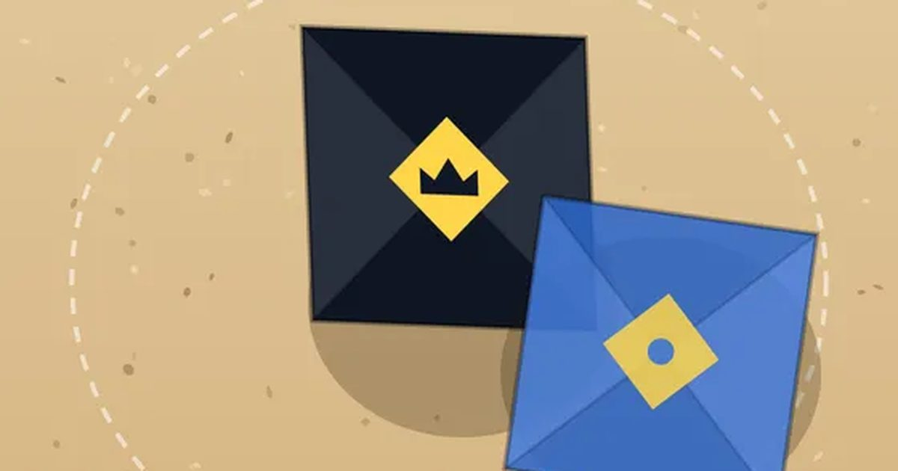

딱지치기
Ddakji Flip
타이밍 · 전통 놀이무료설치 없음폰 · PC
▶ 지금 바로 하기로그인 없이 브라우저에서 바로 시작돼요
어떤 게임인가요?
움직이는 조준점을 눌러 칠 곳을 정하고, 힘 게이지를 눌러 탁! 진짜 딱지처럼 가운데를 치면 꿈쩍도 안 하고 모서리 가까이를 세게 쳐야 넘어가요. 동네 꼬마부터 전설의 딱지왕까지 8명을 꺾고 딴 딱지를 모으세요.
목표 · 상대 딱지를 먼저 넘겨 이기고, 동네 고수 8명을 차례로 꺾으세요. 몇 연승까지 갈 수 있을까요?
이렇게도 찾아요
딱지 게임딱지 넘기기전통놀이ddakjikorean paper flip gameddakji game
#딱지치기 #딱지 #전통놀이 #추억의놀이
게임 방법
- 내 차례: 움직이는 조준점을 한 번 눌러 칠 곳을 정하고, 한 번 더 눌러 힘을 정하면 탁! 던져요.
- 가운데를 치면 꿈쩍도 안 해요. 모서리 근처(노란 조준점)를 금색 힘으로 쳐야 잘 넘어가요.
- 못 넘기면 상대 차례 — 상대가 먼저 내 딱지를 넘기면 끝나요.
- 이기면 상대 딱지를 가져와요. 가장 두꺼운 딱지로 싸우니 상대가 넘기기 어려워져요.
등장하는 것들
- 동네 꼬마 · 얇은 딱지
- 문방구 형 · 별 딱지
- 골목대장 · 줄무늬
- 딱지 수집가 · 물방울
- 우리 반 반장 · 별 딱지
- 옆 동네 고수 · 태극 딱지
- 딱지 장인 · 두꺼운 줄무늬
- 전설의 딱지왕 · 왕관 딱지 · 가장 두꺼움
공략 팁
- 조준점이 노란색일 때가 모서리예요. 서두르지 말고 한 바퀴 기다려도 돼요.
- 힘은 꽉 채우면 오히려 빗나가요. 금색 칸이 가장 좋아요.
이런 게임도 있어요
 포탄 대작전턴제 포격 · 1P/2P
포탄 대작전턴제 포격 · 1P/2P 1 to 50순발력 · 숫자 · 1분
1 to 50순발력 · 숫자 · 1분 장기보드 · 1P/2P
장기보드 · 1P/2P 코너킹 드리프트원버튼 · 운전
코너킹 드리프트원버튼 · 운전 폴짝 개구리길 건너기 · 고전
폴짝 개구리길 건너기 · 고전 링 파이터3D 격투 · 1P/2P
링 파이터3D 격투 · 1P/2P